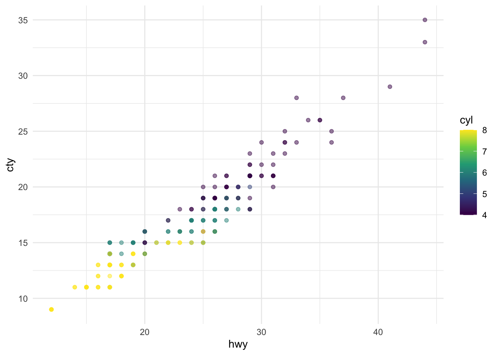
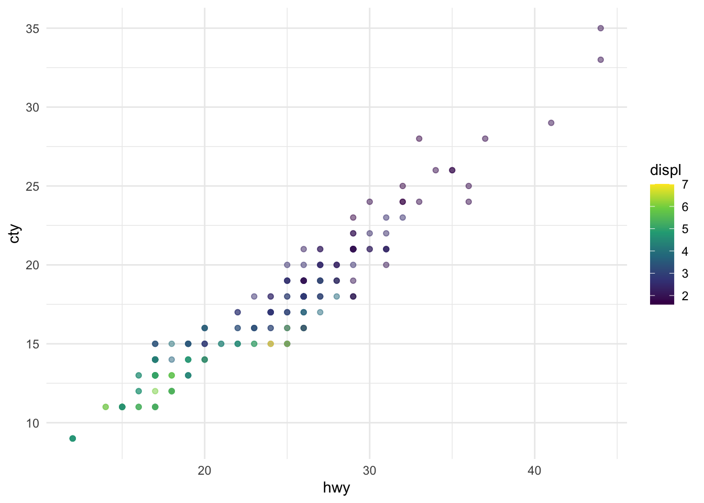

My Quarto Doc
Welcome to my quarto doc!
What is Quarto?
quarto is a way of life, a document, a system (lol) that is built for multiple languages (unlike RMarkdown which is a tool developed for R but we’ve hacked to work with other languages)
looks VERY similar to RMarkdown (you’re already about 90% of the way there)
Steps:
open
.qmdfileswitch between source & visual editors
Render (not knit, from
knitr)hash pipes
#|for chunk options-
no more global options knitr chunk (all goes in yaml
execute:
warning: false
message: false
author, date in yaml has a more “modern feel”
#| label: fig-something,#| fig-cap: "something"(use kebab case)reference figs in-text by their label
@fig-somethingadd mpg plot + callout to add axis labels
add a tip callout
add panel-tabset
add second fig to first chunk with updated chunk options
fig-subcap:,layout-ncol: 2, andcolumn: page
Code
ggplot(mpg, aes(x = hwy, y = cty, color = cyl)) +
geom_point(alpha = 0.5) +
scale_color_viridis_c() +
theme_minimal()
ggplot(mpg, aes(x = hwy, y = cty, color = displ)) +
geom_point(alpha = 0.5) +
scale_color_viridis_c() +
theme_minimal()

Figure 1 is my first ever cross-referenced quarto figure and I’m very excited about it. Figure 1 (a) is colored by number of cylinders and Figure 1 (b) is colored by engine displacement.
Reminder! In Visual editor mode, you can add callouts under the Insert drop down menu.
Surprise! Tabsets!
hello, it’s me
surprise, there’s more content here!